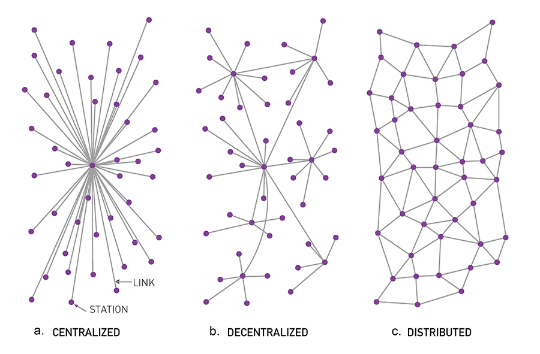
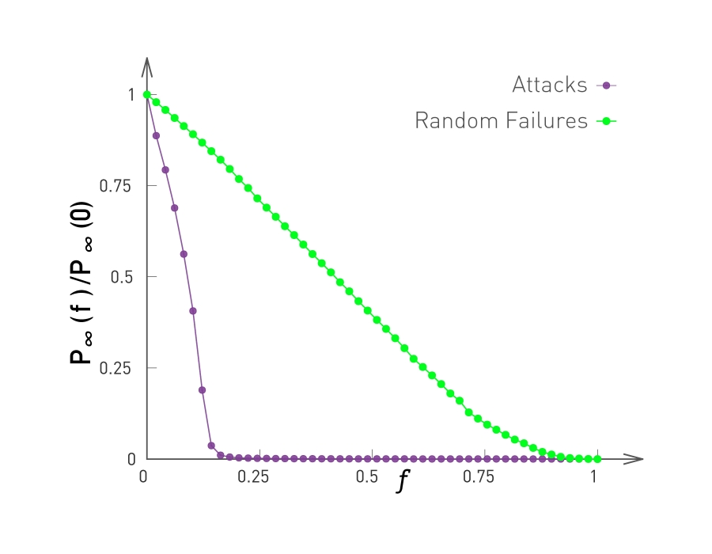

Notes on Gordon Brander’s Decentralization enables permissionless innovation, Centralization is Inevitable and Redecentralization
To be efficient is to be fragile, and to be fragile, over the long run, is to go extinct.
Network Models
See also: network theory
In 1959 RAND, a Californian think-tank, assigned Paul Baran, a young engineer at that time, to develop a communication system that can survive a Soviet nuclear attack.
He found that:
- The original centralized communication system is obviously vulnerable as the destruction of the hub would destroy communication between the end stations.
- The decentralized model, a “hierarchical structure of a set of stars connected in the form of a larger star”, is also too centralized to be viable under attack
- The distributed model, where , each node has roughly the same number of connections to each other and there are no hubs in the network
 Baran, 1964 “On Distributed Communications (Memorandum RM-3420-PR)“
Baran’s ideas were ignored by the military. The internet thus relied on distributed protocols that allowed each node to decide where to link, creating preferential attachment. This gave rise to a scale-free model of the Internet rather than the original mesh-like topology that Baran imagined.
While not the ideal distributed model Baran initially envisioned, the decentralized model that was actually implemented had several features that made it adaptable to failure. Routers could freely join or leave, something that wasn’t possible in the circuit switching model of the internet.
Messages would be broken up into little packets, and each packet would be independently routed to its destination, finding its own best path. Packets would be passed across the network like hot potatoes until they found their destination. This was the advent of packet switching.
Now, it didn’t matter if a router was destroyed because the network could dynamically route around the damage and new routers could be dropped in.
Inevitable Recentralization
Although the underlying protocol layers of our web are decentralized, we see that centralization has re-emerged at the Application Layer: one layer up.
But this centralization brings the same vulnerabilities that the centralized communication model brings that Baran designed to communication system to avoid. If AWS goes down, it takes much of the internet with it.
Today, we see recentralization around
- Trust: security, and thus identity and payments, are all bound to a given domain
- Data: we have many ‘hubs’ for proprietary data like Google Drive, Facebook, etc. (see: Towards Data Neutrality)
- Infrastructure: the actual server farms and cables the internet runs on (failures in companies like CloudFlare and AWS can lead to global disruptions)
- Attention: too much information and not enough attention to give to things. This fundamental scarcity implies search, discovery, ads, spam, and a bunch of other thorny things. (see: attention economy)
Brander proposes a new rule of thumb:
If you decentralize, the system will recentralize, but one layer up. Something new will be enabled by decentralization. That sounds like evolution through layering, like upward-spiraling complexity. That sounds like progress to me.
We see this with hubs on the internet forming, creating scale-free networks. We see this pattern emerge over and over again: a solid sign that there are evolutionary attractors pulling the system in that direction. We know this is true due to the presence of network effects and preferential attachment (e.g. rich-get-richer, economies of scale, running servers is hard, etc.)
The presence of hubs in scale-free mean that communication can happen efficiently, averaging hops as opposed to hops for random networks (see the note on average hop distance in various networks). Fitter nodes attract more connections just by virtue of staying alive or being better. This is the Fitness Model of scale-free networks.
But the problem with scale-free networks is that they are vulnerable to attack. Though they are resilient to random failure of the nodes (generally need to remove nodes to bring down the network), the removal of a small fraction of hubs is sufficient to break a scale-free network into tiny clusters.
Knocking out even a few hubs quickly breaks down the network. Y-axis is the ratio provides the relative size of the largest connected subgraph
When a random shock inevitable causes the collapse of a few hubs, this creates a cascading failure which causes a system-wide collapse. We return to an unstructured, random network.
The key insight is that this process has a direction, from decentralized to centralized, and collapsing back again.